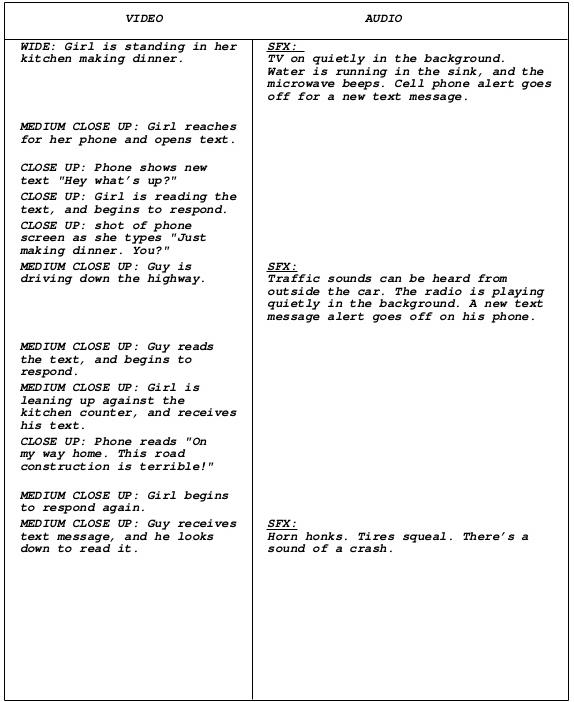

Exploring Media Production
Media Production
- The making of a motion picture, television show, video, commercial, Internet video, or another viewable programming.
- Shared and transmitted through broadcast radio waves, cable, satellite, wireless, or Internet.
Let's watch a video:
“What 15 Movies From 2019 Looked Like Behind The Scenes.”
|
Participate in the Discussion Forum: What was your favourite Behind The Scenes detail from the video? Explain your answer! What is the relevance of collaboration in Media Production? Cite an example or examples. Participate in the Chat:Which of these three processes do you think takes the most time? Pre-production, production, post-production. |

Three steps in Media Production
Pre-productionProduction; and
Post-production
|
The step that takes the most time will differ from movie to movie. Animated films take the most time to produce, while high CGI films will probably take the most time to post-produce.
|

PRE-PRODUCTION
|
Why could it be like a Media Production’s insurance policy?
|
|
Pre-Production Tasks
|
All script must have:
|
Script sample:

| Participate in the Discussion Forum: Which of the tasks mentioned is the easiest to do? Why is that? |
PRODUCTION
- Filming and recording of media begins.
- If you are making a film, this is where hair and makeup come in.
- Camera operators, directors, light operators, sound operators, and more work together to make shots beautiful!
- Rehearsals start and are executed.

Participate in the Chat: In what media production stage will create stage props come in? Pre-production or production?
|
Production Team DIRECTOR: Oversees the shooting and assembly of a media product Participate in the Chat: What production team assignment are you most interested in trying? Why? |
POST PRODUCTION
- when the audio and visual materials are cut together to create the final media product
- happens after shooting and/or recording is complete
- Editors can add effects, music, and other sound effects during post-production.